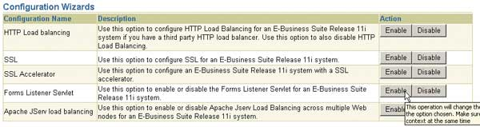
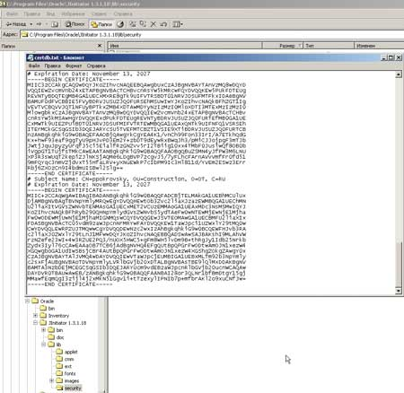

Павел Покровский,
ведущий системный аналитик по информационной безопасности,
"Открытые Технологии"
Все большую распространенность в последнее время приобретают корпоративные системы с доступом через тонкие клиенты. Яркий пример реализации тонкого клиента дает ERP-система Oracle E-Business Suite (OeBS), в которой доступ пользователей реализован по протоколу HTTP/HTTPS с загрузкой необходимых приложений (апплетов Java) на рабочую станцию пользователя. Наиболее распространен доступ по HTTP, однако в данном протоколе не реализованы криптографические алгоритмы, т. е. с точки зрения защиты информации он имеет серьезный недостаток. Таким образом, логичнее применять защищенную версию протокола - HTTPS, которая представляет собой модификацию протокола HTTP с применением криптографической защиты в рамках SSL. Протокол SSL (Secure Socket Layer), в свою очередь, реализован так, чтобы обеспечить совместимость с конечными клиентами в части используемых криптографических алгоритмов для шифрования и контроля целостности передаваемых данных.
"Договорившись" о наборе криптоалгоритмов в рамках "рукопожатия", SSL-клиент и сервер устанавливают защищенное соединение. Учитывая, что в Oracle E-Business Suite в качестве HTTP-сервера используется Oracle HTTP Server (OHS), реализованный на базе Apache, все было бы достаточно просто - если бы настройка SSL сводилась только к настройке Oracle HTTP Server. Однако это не так: Oracle E-Business Suite имеет многозвенную архитектуру, и в ней, помимо Oracle HTTP Server, для взаимодействия с пользователями применяется также служба Oracle Forms. Соответственно необходимо настраивать SSL и в данной службе.
Для настройки Oracle E-Business Suite рекомендуется утилита AutoConfig, которая использует для целей централизованной настройки всех приложений Oracle E-Business Suite файл контекста. Данный файл представляет собой перечень переменных OeBS и их значений в формате XML. Таким образом, вместо внесения изменений непосредственно в конфигурационные файлы служб Oracle (Oracle HTTP Server, Oracle Forms) эти изменения следует вносить в файл контекста и далее с помощью утилиты AutoConfig распространять их на сервисы OeBS.
В принципе процесс настройки SSL для служб OeBS описан в документе Oracle Note 123718.1 A Guide to Understanding and Implementing SSL with Oracle Applications, но, как показала практика, данный документ не полностью отражает все тонкости настройки SSL. Кроме того, в нем сделано много допущений, которые совсем не обязательно применимы к конечной системе. Например, в части настройки SSL для Oracle Forms предполагается, что корневой сертификат удостоверяющего центра уже содержится в дистрибутиве виртуальной машины Java от Oracle (JInitiator), однако это справедливо только в том случае, если корневой сертификат для Oracle Forms приобретен у одного из доверенных удостоверяющих центров (Verisign, Thawte и т. д.), что, очевидно, не всегда соответствует действительности.
Ради точности отметим, что наш экземпляр Oracle E-Business Suite устанавливался на платформе Red Hat Linux ES3 x86. Таким образом, команды, приведенные ниже, справедливы для этой платформы и других Unix-платформ и будут отличаться (главным образом в части путей и синтаксиса) для платформы Windows.
Итак, конфигурирование контекста можно выполнить тремя способами:
- непосредственно редактируя файл контекста (он размещен на пути, равном значению переменной $CONTEXT_FILE);
- используя утилиту командной строки txkrun.pl;
- используя Web-интерфейс Oracle Applications Manager.
Мы рекомендуем пользоваться вторым и третьим способами, так как при непосредственном внесении изменений в файл контекста велик риск ошибки. Естественно, мы рекомендуем сделать резервную копию файла контекста перед внесением каких-либо изменений.
Конфигурация, которую мы хотим реализовать, выглядит следующим образом:
- пользователь обращается по HTTPS на URL начальной страницы Oracle E-Business Suite;
- сервер аутентифицирует себя для пользователя, предъявляя сертификат;
- пользователь подтверждает аутентификацию сервера и аутентифицирует себя по имени и паролю;
- сервер допускает пользователя на рабочую страницу, генерируемую с учетом роли пользователя в системе;
- пользователь обращается по гиперссылке для загрузки требуемого ему апплета Java;
- сервер возвращает пользователю апплет Java по протоколу HTTPS;
- пользователь запускает апплет посредством виртуальной машины Java от Oracle (JInitiator);
- апплет взаимодействует с сервером Forms по протоколу HTTPS, используя для этого сервлет, запускаемый на стороне сервера.
В конфигурации по умолчанию взаимодействие ведется по протоколу HTTP. Взаимодействие апплета Java с сервером Forms происходит через выделенный порт на сервере Oracle E-Business Suite (TCP/9000); следовательно, данное взаимодействие потребует сформировать дополнительное разрешительное правило на межсетевом экране.
Таким образом, необходимо выполнить следующие общие шаги:
- генерация ключевого материала;
- перевод сервера Oracle HTTP Server в режим HTTPS;
- перевод сервера Forms в режим взаимодействия через сервлет;
- настройка рабочего места пользователя.
Генерация ключевого материала
В принципе для генерации ключевого материала можно использовать любые технические средства, например, ПО OpenSSL. Однако разумнее для этих целей задействовать корпоративную инфраструктуру открытых ключей, если таковая развернута. Формирование сертификата выполняется по стандартному запросу на сертификат формата PKCS#10; при этом следует учесть, что сертификат должен формироваться на имя, равное полному доменному имени (FQDN - Fully Qualified Domain Name) сервера OHS/Forms. Сервер OHS поддерживает работу как с обычными файлами ключевого материала формата PEM, так и с контейнерами PKCS#12, сгенерированными с использованием ПО Oracle Wallet Manager. Сервер Forms поддерживает только контейнеры Wallet.
Если вы решили остановить свой выбор на использовании ключевого материала, размещенного в файлах PEM, рекомендуем не устанавливать пароль на файл секретного ключа. Во-первых, каждый раз при запуске сервера OHS придется вводить пароль для расшифрования ключа, во-вторых, наличие или отсутствие пароля на ключе не является основанием для сохранения активного статуса соответствующего сертификата, например, при подозрении на компрометацию ключа. Директория для размещения ключевого материала задается в файле контекста (табл. 1).
Таблица 1. Состав переменных контекста для настройки ключевого материала в OHS
| Переменная | Комментарий |
| s_web_ssl_directory | Директория для размещения конфигурационных файлов |
| s_web_ssl_keyfile | Полный путь к файлу секретного ключа сервера |
| s_web_ssl_certfile | Полный путь к файлу сертификата сервера |
| s_web_ssl_certchainfile | Полный путь к файлу, содержащему цепь сертификатов удостоверяющих центров для установления доверия к сертификату сервера |
| s_websrv_wallet_file | Путь к директории, в которой размещен контейнер PKCS#12, сформированный с использованием ПО Oracle Wallet Manager |
Для установления доверия к сертификату сервера на стороне клиента корневые сертификаты, ключами которых подписывается сертификат сервера OHS, должны быть добавлены в локальное хранилище сертификатов на рабочем месте пользователя.
Для работы Forms с поддержкой SSL сервер Forms также должен быть сконфигурирован для импорта ключевого материала. Обязательное условие для сервера Forms - формат ключевого материала Oracle Wallet. Вообще говоря, Wallet представляет собой обычный контейнер PKCS#12, так что возможна конвертация контейнеров Wallet в контейнеры OpenSSL (PEM) и обратно. ПО Oracle Wallet Manager всегда сохраняет контейнеры с фиксированным именем и расширением. При отмеченной опции Auto Login (ПО Oracle Wallet Manager, меню Wallet) сохраняется два файла: ewallet.p12 и cwallet.sso. Первый представляет собой тот самый контейнер PKCS#12, в котором хранится ключевой материал (секретный ключ сервера, защищенный паролем, сертификат сервера, сертификаты доверенных УЦ). Второй файл - это контейнер, сконвертированный из PKCS#12 для поддержки автоматического запуска служб, использующих Wallet как хранилище ключевого материала.
При формировании ключевого материала соблюдаются те же правила, которые применялись при формировании ключевого материала для сервера OHS (например, конечное имя сертификата должно равняться полному доменному имени сервера Forms).
Настройка Oracle HTTP Server
Несмотря на то, что Oracle HTTP Server является производным от распространенного Web-сервера Apache, он конфигурируется не путем редактирования файла httpd.conf, а через установку соответствующих переменных контекста. В части поддержки SSL редактированию подвергается ряд переменных контекста (они приведены в табл. 2).
Таблица 2. Состав переменных контекста для настройки SSL и их значения
| Переменная | Значение | Комментарий |
| url_protocol | https | Прикладной протокол, возвращаемый пользователю, в составе URL гиперссылок |
| s_web_ssl_directory | /apps/apps/Apache/Apache/conf | Директория, в которой размещаются конфигурационные файлы OHS |
| s_web_ssl_certfile | /apps/apps/Apache/Apache/conf/ssl.crt/apps.test.ot.crt | Полный путь (включая имя файла), в котором размещен сертификат сервера OHS |
| s_web_ssl_certchainfile | /apps/apps/Apache/Apache/conf/ssl.crt/test.ot.chain.crt | Полный путь (включая имя файла), в котором размещена цепь сертификатов для установления доверия к сертификату сервера OHS |
| s_web_ssl_keyfile | /apps/apps/Apache/Apache/conf/ssl.key/apps.test.ot.key | Полный путь (включая имя файла) к секретному ключу OHS |
| s_webentryurlprotocol | https | Прикладной протокол, по которому происходит взаимодействие пользователей с OeBS |
| s_webport | 4443 | Номер порта TCP, по которому происходит взаимодействие |
| s_webssl_port | 4443 | Номер порта TCP, по которому происходит взаимодействие в защищенном режиме |
| s_apps_portal_url | https://apps.test.ot:4443/pls/VIS_portal30/portal30.home | Указатель URL, по которому расположено приложение Applications Portal |
| s_chronosURL | https://apps.test.ot:4443/oracle_smp_chronos/oracle_smp_chronos_sdk.gif | Указатель URL, по которому расположено приложение Chronos |
| s_disco_port | 4443 | Порт TCP, по которому происходит взаимодействие с приложением Discoverer |
| s_disco_protocol | https | Прикладной протокол, по которому происходит взаимодействие с приложением Discoverer |
| s_discoinstance | apps.test.ot_4443 | Имя экземпляра приложения Discoverer вида <доменное имя сервера>_<значение переменной s_disco_port> |
| s_f60map | https://apps.test.ot:4443/OA_TEMP | URL, возвращаемый пользователю для обращения к апплетам сервера Forms |
| s_webcache_http_port | 4443 | Порт, по которому происходит взаимодействие через Oracle Webcache по протоколу HTTP |
| s_webcache_https_port | 4443 | Порт, по которому происходит взаимодействие через Oracle Webcache по протоколу HTTPS |
| s_webcache_url_protocol | https | Прикладной протокол, по которому происходит взаимодействие через Oracle Webcache |
Допустим, полное доменное имя нашего сервера приложений - apps.test.ot, тогда для переключения в режим SSL перечисленным переменным следует установить значения согласно табл. 2.
Как видно из табл. 2, в качестве порта для SSL выбран порт 4443. Дело в том, что, как правило, службы Oracle устанавливаются и работают с правами, отличными от прав суперпользователя (root). Таким образом, по умолчанию службам Oracle недоступны порты TCP диапазона 1-1024.
Конфигурирование для поддержки SSL возможно через графический Web-интерфейс с использованием мастеров (Configuration Wizards) Oracle Applications Manager. Мастера для автоматизации конфигурирования поставляются в составе обновления Oracle Applications Manager Minipack 11i.OAM.H. Интерфейс конфигурирования при этом выглядит, как показано на рис. 1.
|  |
| Рис. 1. Графический интерфейс Configuration Wizards.
|
Если обновление от Oracle, предоставляющее возможность конфигурирования через Oracle Applications Manager, не установлено, для целей конфигурирования можно использовать сценарий txkrun.pl. Данный сценарий написан на языке Perl и предназначен для автоматизированного внесения изменений в контекст посредством указания параметров в командной строке. В табл. 3 представлены основные ключи, которые передаются сценарию txkrun.pl через командную строку.
Таблица 3. Глобальные параметры Configuration Wizards
| Параметр | Значение | Описание |
| Script | SetAdvCfg | Сценарий Configuration Wizards для выполнения |
| Appsuser | <имя пользователя> | Имя пользователя Oracle Applications (по умолчанию - apps) |
| Appspass | <пароль> | Имя пользователя Oracle Applications (по умолчанию - apps) |
| Enable disable |
<опция> | Опция для включения/отключения |
Для настройки SSL при доступе к OHS требуется передать сценарию txkrun.pl параметры, приведенные в табл. 4.
Таблица 4. Параметры Configuration Wizards для настройки SSL
| Параметр | Значение | Описание |
| enable | SSL | Задание конфигурации SSL |
| s_webssl_port | 4443 | Порт TCP, на котором OHS будет принимать соединения SSL |
| s_web_ssl_directory | $COMMON_TOP/admin/certs/apache/ | Директория, в которой хранится ключевой материал OHS в формате OpenSSL (PEM) |
В итоге полная командная строка для запуска Configuration Wizards для поддержки SSL на сервере OHS будет выглядеть следующим образом:
$ txkrun.pl -script=SetAdvCfg -appsuser=apps -appspass=apps -enable=SSL -s_webssl_port=4443 -s_web_ssl_directory="$COMMON_TOP/admin/certs/apache/"
Полный состав команд сценария txkrun.pl описан в документе Metalink Note #277574.1
Настройка Oracle Forms
По умолчанию при установке Oracle E-Business Suite режим SSL отключен, Oracle Forms Server работает в режиме Listener (принимает соединения на порт TCP/9000). Для поддержки SSL в приложениях Forms мы рекомендуем перенастроить сервер Forms на взаимодействие через сервлет. Взаимодействие с сервером Forms в данном случае происходит по протоколу HTTP(S) по стандартным портам Oracle HTTP Server. Режим работы сервера Forms определяется переменной контекста s_frm_connect_mode. Соответственно данная переменная может иметь следующие значения:
- socket - режим по умолчанию;
- http - для взаимодействия по протоколу HTTP;
- https - для взаимодействия по протоколу HTTPS.
В нашем случае, очевидно, следует установить значение переменной s_frm_connect_mode равным https. Однако в данном случае трафик взаимодействия клиентов с сервером Forms возрастает примерно на 40%, поскольку фактически выполняется инкапсуляция трафика Forms в HTTP(S). К тому же следует учесть, что трафик HTTPS как зашифрованный не подвергается компрессии.
Режим работы сервера Forms через сервлет поддерживается начиная с Forms6i Patchset 7. Необходимо также, чтобы сервер Forms был установлен на одном узле (tier) с сервером OHS.
Директория, в которую сохранен Wallet, содержащий ключевой материал для сервера Forms, определяется переменной контекста s_frmWalletDir.
Для переключения Forms в режим сервлета задается значение переменной контекста s_forms_servlet_serverurl. Для задействования переменной следует задать ее значение равным относительному пути к сервлету, например:
<server_url oa_var="s_forms_servlet_serverurl">/forms/formservlet</server_url>
После внесения изменений в файл контекста необходимо распространить данные изменения, выполнив сценарий adautocfg.sh, который, опираясь на значения переменных контекста, конфигурирует компоненты Oracle E-Business Suite.
Переключение в режим сервлета возможно через графический интерфейс Oracle Applications Manager (ссылка Forms Listener Servlet). Для активирования данной опции следует выбрать Enable и следовать инструкциям Configuration Wizards.
Для переключения сервера Forms в режим сервлета также можно воспользоваться утилитой txkrun.pl, выполнив следующую команду:
$ txkrun.pl -script=SetAdvCfg -appsuser=apps -appspass=apps -enable=FormsLsnrServlet
Тем не менее значение переменной s_frm_connect_mode необходимо установить в https вручную в файле контекста. Возможно, данный недостаток будет исправлен в будущих релизах.
После выполнения сценария txkrun.pl и исправления контекста необходимо выполнить конфигурирование OeBS с использованием AutoConfig (сценарий adautocfg.sh). Необходимо также провести перезапуск всех служб, выполнив последовательно команды:
sh $COMMON_TOP/admin/scripts/<имя контекста>/adstpall.sh apps/apps
sh $COMMON_TOP/admin/scripts/<имя контекста>/adstrtall.sh apps/apps
Настройка клиентского ПО
Так как взаимодействие пользователя с OeBS осуществляется фактически через два прикладных компонента: Интернет-браузер и виртуальную машину JInitiator, настройку данных компонентов и установление доверия необходимо провести для каждого компонента в отдельности. Настройка доверия заключается в добавлении в хранилища сертификатов браузера и JInitiator корневого сертификата (цепи сертификатов) инфраструктуры открытых ключей, обслуживающей Oracle E-Business Suite. В части браузера используется хранилище операционной системы; ПО JInitiator для данных целей использует файл certdb.txt, в который помещены сертификаты удостоверяющих центров в формате PEM.
Таким образом, для установления защищенного взаимодействия необходимо, чтобы в хранилище сертификатов рабочей станции, с которой осуществляется доступ, были помещены корневой сертификат инфраструктуры, обслуживающей OEBS, и сертификат сервера, а в файл c:\program files\oracle\jinitiator 1.3.1.18\lib\security\certdb.txt - корневой сертификат (цепь сертификатов) инфраструктуры, обслуживающей OEBS, в формате PEM (рис. 2). При помещении цепи сертификатов в файл certdb.txt сертификат удостоверяющего центра, подписавший непосредственно сертификат сервера, должен быть помещен выше сертификата корневого удостоверяющего центра.
|  |
| Рис. 2. Редактирование файла certdb.txt.
|
С технической точки зрения внесение изменений в дистрибутив JInitiator в файл certdb.txt не составляет проблемы (при наличии комплекта ПО InstallShield), однако проблемы могут возникнуть в плане лицензионного соглашения и авторского права компании Oracle на ПО JInitiator. Из данной ситуации существует три выхода.
- Внесение изменений в certdb.txt администратором вручную на каждой рабочей станции. Очевидно, данный вариант возможен только при небольшом количестве рабочих станций в ведении администратора.
- Централизованное распространение файла certdb.txt через службы OeBS (например, гиперссылка на файл, размещенный в директориях Oracle HTTP Server) с соответствующим инструктажем пользователей. Данный вариант возможен только при наличии у пользователей прав локального администратора их АРМ.
- Централизованное распространение файла certdb.txt через другие службы централизованного управления (например, групповые политики доменов Windows, службы Novell).
Восстановление исходных настроек
Если внесение вышеперечисленных изменений повлекло за собой нарушение работы OEBS, можно восстановить настройки, существовавшие до внесения изменений. Для этого необходимо восстановить из резервной копии файл контекста (переменная окружения $CONTEXT_FILE) и запустить процедуры AutoConfig с перезапуском всех служб OEBS.
Заключение
В данной статье приведена методика настройки приложений Oracle E-Business Suite, позволяющая провести одностороннюю аутентификацию сервера по отношению к пользователю, а также установить защищенное взаимодействие пользователей с этими приложениями. Логичным развитием данной методики представляется реализация двусторонней аутентификации с использованием сертификатов X.509 на стороне как сервера, так и клиента. Для усиления данного метода аутентификации возможно также использовать носители e-token для хранения ключевого материала. К сожалению, в установках Oracle E-Business Suite 1.5.9 и 1.5.10 метод аутентификации клиентов по сертификатам отсутствует, для реализации данного метода необходимо устанавливать и настраивать службы Oracle Single Sign-On. Данная тематика слабо документирована и, таким образом, заслуживает отдельной статьи.